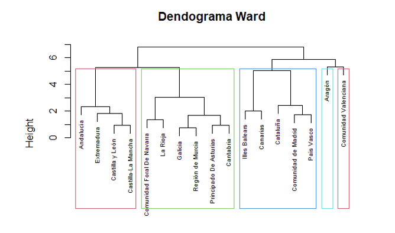
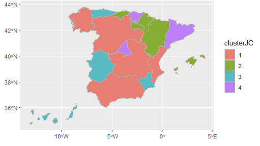

Estudio de Transacciones Fraudulentas con Tarjetas de Crédito II
El número de reclamaciones de pólizas se predijo basándose en datos históricos utilizando modelos lineales generalizados. 📑
El número de reclamaciones de pólizas se predijo basándose en datos históricos utilizando modelos lineales generalizados. 📑
Se desarrolló un modelo para la calificación crediticia, centrándose en evaluar su desempeño a través del ajuste de parámetros. 🏦
Este trabajo enfatiza la importancia de comprender y abordar las fluctuaciones del turismo para tomar decisiones informadas, como mejorar la infraestructura para caravanas y campamentos e implementar políticas de marketing para atraer más visitantes al país.🗺️

Se utilizan técnicas de factorización para explicar la mayoría de las variables originales con un número menor de factores para utilizar como predictores potenciales. 📋
Los patrones de comportamiento se identifican examinando los datos de una muestra del experimento del silbido, lo que permite tomar decisiones más informadas en el futuro con respecto al control fiscal.. 🧾

Se utilizan metodologías de agrupamiento directo y jerárquico para categorizar a las comunidades en grupos que son homogéneos por naturaleza pero heterogéneos en cuanto a género. 📍